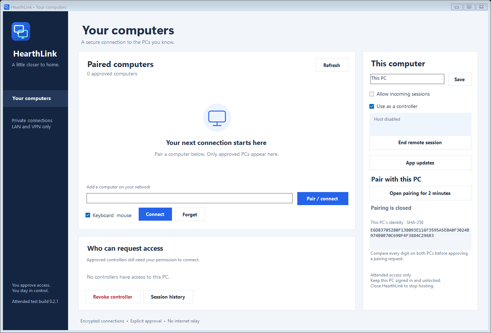

Made for your Windows computers
Your other PC.
Right here.
The file on your desk. The computer in the next room. Bring your Windows PCs a little closer with a connection you control.
Windows 11 Home & Pro · Free test build
Illustration of a home setup. Every real session needs approval.
↔Any networkEncrypted end to end, at home or away.
✓Your permissionApprove every incoming session.
⌘Your Windows PCWorks with Windows 11 Home & Pro.
Familiar from the first click
A place for
your computers.
Pair once, then choose the computer you want to use. View its desktop, control its keyboard and mouse, or switch between its displays.
The person at the remote PC approves the connection and sees a visible notice for the whole session.
Explore the current build
Two PCs.
Three small steps.
You’ll need both computers connected to the internet. They don’t have to be on the same network.
- 1
Install on both computers
Download the Windows installer. On the PC you want to reach, allow incoming sessions.
- 2
Make the introduction
Type the 12-digit pairing code shown on the other PC, then compare the identities on both screens.
- 3
Ask to connect
Click Pair / connect. Once the other PC approves, its desktop opens in HearthLink.
A little closer to home.
Start with the computers you already own.